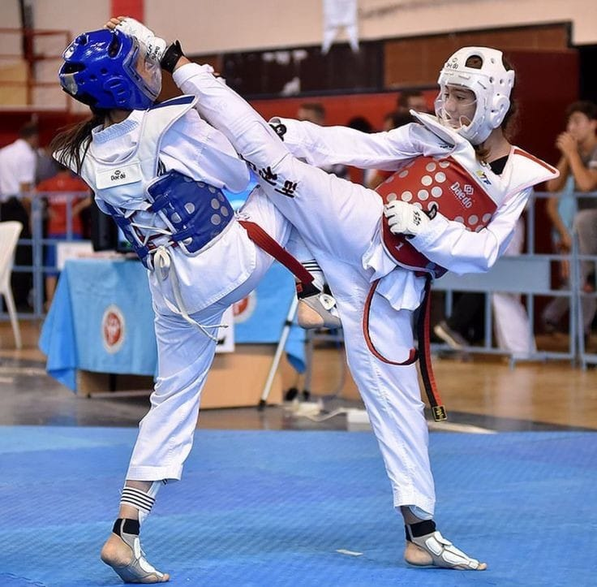
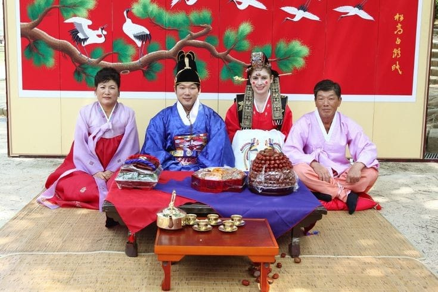

O K-pop é um dos maiores fenômenos culturais da Coreia do Sul, conquistando fãs no mundo todo. Artistas como BTS, Blackpink, EXO, e TWICE são algumas das bandas mais famosas que têm promovido a música pop sul-coreana globalmente.
A Coreia do Sul é o berço de várias artes marciais, sendo o Taekwondo a mais famosa e amplamente praticada no mundo. O Taekwondo é uma arte marcial focada em chutes, socos e técnicas de autodefesa. Além do Taekwondo, a Coreia também tem outras tradições marciais, como o Hapkido e o Taekkyeon, que são conhecidos por suas combinações de movimentos fluidos e acrobáticos.
A cerimônia do chá coreana, conhecida como Daryeda, é uma prática tradicional que envolve o preparo e a degustação cuidadosa do chá, geralmente em um ambiente calmo e com grande foco na etiqueta e no respeito. Essa cerimônia é uma expressão de hospitalidade e reverência, frequentemente realizada em ocasiões especiais ou como um gesto de respeito entre as gerações.
